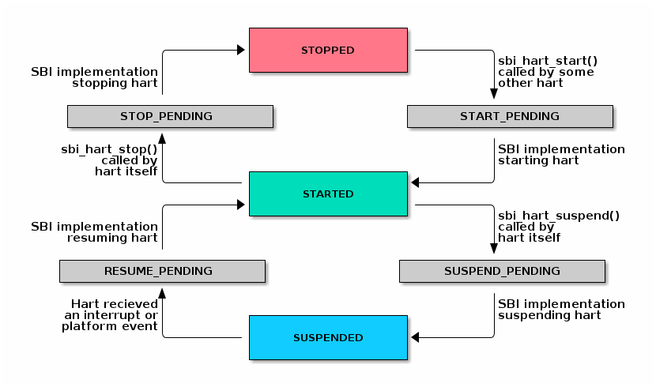

RISC-V Supervisor Binary Interface RISC-V Supervisor Binary Interface Specification Chapter 10. Hart State Management Extension (EID #0x48534D "HSM") 10.1. Hart State Management Extension (EID #0x48534D "HSM") The Hart State Management (HSM) Extension introduces a set of hart states and a set of functions which allow the supervisor-mode software to request a hart state change. The HSM Hart States shown below describes all possible HSM states along with a unique HSM state id for each state: Table 1. HSM Hart States State ID State Name Description 0 STARTED The hart is physically powered-up and executing normally. 1 STOPPED The hart is not executing in supervisor-mode or any lower privilege mode. It is probably powered-down by the SBI implementation if the underlying platform has a mechanism to physically power-down harts. 2 START_PENDING Some other hart has requested to start (or power-up) the hart from the STOPPED state and the SBI implementation is still working to get the hart in the STARTED state. 3 STOP_PENDING The hart has requested to stop (or power-down) itself from the STARTED state and the SBI implementation is still working to get the hart in the STOPPED state. 4 SUSPENDED This hart is in a platform specific suspend (or low power) state. 5 SUSPEND_PENDING The hart has requested to put itself in a platform specific low power state from the STARTED state and the SBI implementation is still working to get the hart in the platform specific SUSPENDED state. 6 RESUME_PENDING An interrupt or platform specific hardware event has caused the hart to resume normal execution from the SUSPENDED state and the SBI implementation is still working to get the hart in the STARTED state. At any point in time, a hart should be in one of the above mentioned hart states. The hart state transitions by the SBI implementation should follow the state machine shown below in the SBI HSM State Machine.  Figure 1. SBI HSM State Machine A platform can have multiple harts grouped into hierarchical topology groups (namely cores, clusters, nodes, etc.) with separate platform specific low-power states for each hierarchical group. These platform specific low-power states of hierarchical topology groups can be represented as platform specific suspend states of a hart. An SBI implementation can utilize the suspend states of higher topology groups using one of the following approaches: Platform-coordinated: In this approach, when a hart becomes idle the supervisor-mode power-managment software will request deepest suspend state for the hart and higher topology groups. An SBI implementation should choose a suspend state at higher topology group which is: Not deeper than the specified suspend state Wake-up latency is not higher than the wake-up latency of the specified suspend state OS-inititated: In this approach, the supervisor-mode power-managment software will directly request a suspend state for higher topology group after the last hart in that group becomes idle. When a hart becomes idle, the supervisor-mode power-managment software will always select suspend state for the hart itself but it will select a suspend state for a higher topology group only if the hart is the last running hart in the group. An SBI implementation should: Never choose a suspend state for higher topology group different from the specified suspend state Always prefer most recent suspend state requested for higher topology group 10.1.1. Function: Hart start (FID #0) struct sbiret sbi_hart_start(unsigned long hartid, unsigned long start_addr, unsigned long opaque) Request the SBI implementation to start executing the target hart in supervisor-mode, at the address specified by start_addr, with the specific register values described in HSM Hart Start Register State. Table 2. HSM Hart Start Register State Register Name Register Value satp 0 sstatus.SIE 0 a0 hartid a1 opaque parameter All other registers remain in an undefined state. A single unsigned long parameter is sufficient as start_addr, because the hart will start execution in supervisor-mode with the MMU off, hence start_addr must be less than XLEN bits wide. This call is asynchronous — more specifically, the sbi_hart_start() may return before the target hart starts executing as long as the SBI implementation is capable of ensuring the return code is accurate. If the SBI implementation is a platform runtime firmware executing in machine-mode (M-mode), then it MUST configure any physical memory protection it supports, such as that defined by PMP, and other M-mode state, before transferring control to supervisor-mode software. The hartid parameter specifies the target hart which is to be started. The start_addr parameter points to a runtime-specified physical address, where the hart can start executing in supervisor-mode. The opaque parameter is an XLEN-bit value which will be set in the a1 register when the hart starts executing at start_addr. The possible error codes returned in sbiret.error are shown in the HSM Hart Start Errors below. Table 3. HSM Hart Start Errors Error code Description SBI_SUCCESS Hart was previously in stopped state. It will start executing from start_addr. SBI_ERR_INVALID_ADDRESS start_addr is not valid, possibly due to the following reasons: * It is not a valid physical address. * Executable access to the address is prohibited by a physical memory protection mechanism or H-extension G-stage for supervisor-mode. SBI_ERR_INVALID_PARAM hartid is not a valid hartid as the corresponding hart cannot be started in supervisor mode. SBI_ERR_ALREADY_AVAILABLE The given hartid is already started. SBI_ERR_FAILED The start request failed for unspecified or unknown other reasons. 10.1.2. Function: Hart stop (FID #1) struct sbiret sbi_hart_stop(void) Request the SBI implementation to stop executing the calling hart in supervisor-mode and return its ownership to the SBI implementation. This call is not expected to return under normal conditions. The sbi_hart_stop() must be called with supervisor-mode interrupts disabled. The possible error codes returned in sbiret.error are shown in the HSM Hart Stop Errors below. Table 4. HSM Hart Stop Errors Error code Description SBI_ERR_FAILED Failed to stop execution of the current hart 10.1.3. Function: Hart get status (FID #2) struct sbiret sbi_hart_get_status(unsigned long hartid) Get the current status (or HSM state id) of the given hart in sbiret.value, or an error through sbiret.error. The hartid parameter specifies the target hart for which status is required. The possible status (or HSM state id) values returned in sbiret.value are described in HSM Hart States. The possible error codes returned in sbiret.error are shown in the HSM Hart Get Status Errors below. Table 5. HSM Hart Get Status Errors Error code Description SBI_ERR_INVALID_PARAM The given hartid is not valid. The harts may transition HSM states at any time due to any concurrent sbi_hart_start() or sbi_hart_stop() or sbi_hart_suspend() calls, the return value from this function may not represent the actual state of the hart at the time of return value verification. 10.1.4. Function: Hart suspend (FID #3) struct sbiret sbi_hart_suspend(uint32_t suspend_type, unsigned long resume_addr, unsigned long opaque) Request the SBI implementation to put the calling hart in a platform specific suspend (or low power) state specified by the suspend_type parameter. The hart will automatically come out of suspended state and resume normal execution when it receives an interrupt or platform specific hardware event. The platform specific suspend states for a hart can be either retentive or non-retentive in nature. A retentive suspend state will preserve hart register and CSR values for all privilege modes whereas a non-retentive suspend state will not preserve hart register and CSR values. Resuming from a retentive suspend state is straight forward and the supervisor-mode software will see SBI suspend call return without any failures. The resume_addr parameter is unused during retentive suspend. Resuming from a non-retentive suspend state is relatively more involved and requires software to restore various hart registers and CSRs for all privilege modes. Upon resuming from non-retentive suspend state, the hart will jump to supervisor-mode at address specified by resume_addr with specific registers values described in the HSM Hart Resume Register State below. Table 6. HSM Hart Resume Register State Register Name Register Value satp 0 sstatus.SIE 0 a0 hartid a1 opaque parameter All other registers remain in an undefined state. A single unsigned long parameter is sufficient for resume_addr, because the hart will resume execution in supervisor-mode with the MMU off, hence resume_addr must be less than XLEN bits wide. The suspend_type parameter is 32 bits wide and the possible values are shown in HSM Hart Suspend Types below. Table 7. HSM Hart Suspend Types Value Description 0x00000000 Default retentive suspend 0x00000001 - 0x0FFFFFFF Reserved for future use 0x10000000 - 0x7FFFFFFF Platform specific retentive suspend 0x80000000 Default non-retentive suspend 0x80000001 - 0x8FFFFFFF Reserved for future use 0x90000000 - 0xFFFFFFFF Platform specific non-retentive suspend The resume_addr parameter points to a runtime-specified physical address, where the hart can resume execution in supervisor-mode after a non-retentive suspend. The opaque parameter is an XLEN-bit value which will be set in the a1 register when the hart resumes execution at resume_addr after a non-retentive suspend. The possible error codes returned in sbiret.error are shown in the HSM Hart Suspend Errors below. Table 8. HSM Hart Suspend Errors Error code Description SBI_SUCCESS Hart has suspended and resumed successfully from a retentive suspend state. SBI_ERR_INVALID_PARAM suspend_type is reserved or is platform-specific and unimplemented. SBI_ERR_NOT_SUPPORTED suspend_type is not reserved and is implemented, but the platform does not support it due to one or more missing dependencies. SBI_ERR_INVALID_ADDRESS resume_addr is not valid, possibly due to the following reasons: * It is not a valid physical address. * Executable access to the address is prohibited by a physical memory protection mechanism or H-extension G-stage for supervisor-mode. SBI_ERR_FAILED The suspend request failed for unspecified or unknown other reasons. 10.1.5. Function Listing Table 9. HSM Function List Function Name SBI Version FID EID sbi_hart_start 0.2 0 0x48534D sbi_hart_stop 0.2 1 0x48534D sbi_hart_get_status 0.2 2 0x48534D sbi_hart_suspend 0.3 3 0x48534D Chapter 9. RFENCE Extension (EID #0x52464E43 "RFNC") Chapter 11. System Reset Extension (EID #0x53525354 "SRST")